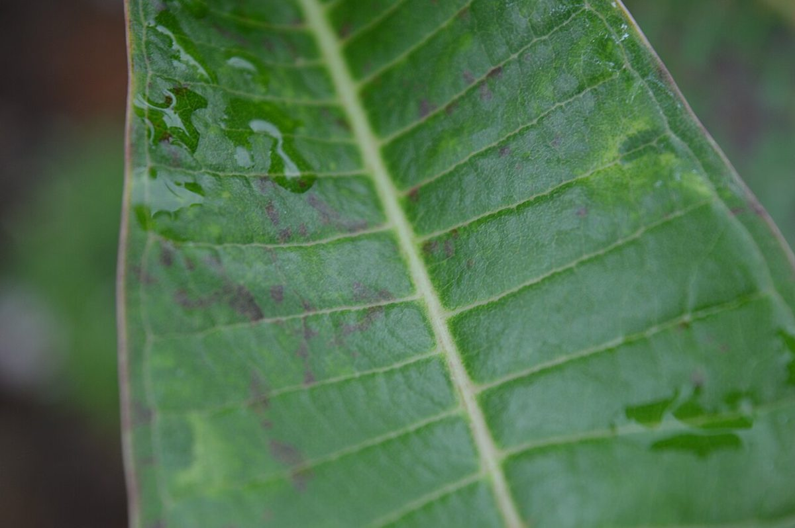

ベーカリー / 青森県弘前市
パン屋
といとい
青森県弘前市城東中央にあるパン屋「といとい」のご案内ページです。電話は 0172-80-9276。営業時間やメニューなど、詳しいことは準備中です。Instagramもどうぞ。

制作側の連想
「といとい」から、雨樋(あまどい)を思い浮かべた
屋号の由来は分かりません。制作側は「とい」という音から雨樋(あまどい)を連想し、軒の横樋から縦樋をつたって流れていく雨水の道すじを、サイトの骨組みにしました。制作側の連想で、お店の理念・由来とは無関係です。
ひとしずくの道すじ
軒から排水口まで、4つの継ぎ手。
写真は雨水の流れのイメージです。国外・撮影地不明のフリー素材で、お店とは関係ありません。
- 01
軒樋 のきどい
ひとしずく
葉の上にたまる水のつぶ。道すじの出発点としてのイメージです。

撮影地不明のイメージ - 02
集水器 しゅうすいき
あつまる
つぶがひとつの先端へ寄っていきます。

国外のイメージ(オーストラリア) - 03
縦樋 たてどい
おちる
まっすぐ下りた水が、波紋になって広がります。
撮影地不明のイメージ - 04
排水口 はいすいこう
ひろがる
行き着いた先の、夕空を映す水面です。
パンの写真(イメージ)
パンの写真は、フリー素材です。
お店のパンではありません。提供している商品を示すものでもありません。


ご案内
お店のこと(確認できたものだけ)
| 所在地 | 〒036-8093 青森県弘前市城東中央4丁目13-10 |
|---|---|
| 電話 | 0172-80-9276 |
| 営業時間 | 準備中 |
| 定休日 | 準備中 |
| ご予約 | 準備中 |
| 駐車場 | 準備中 |
| SNS | Instagram @panya_toitoi |